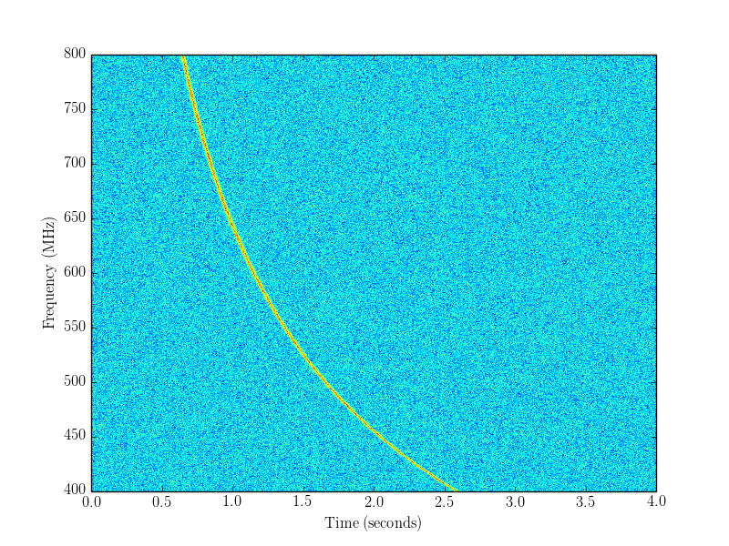

Example 1: simulating an FRB¶
Note that the documentation is for the cmake_pybind11 branch of simpulse, not the master branch! The cmake_pybind11 simpulse branch will be merged to master soon.
Note: before running the example scripts, you will need to do make install in the build directory (make is not enough).
The following plot shows Gaussian noise, plus a simulated FRB with signal-to-noise ratio 250, in the (frequency, time) plane:
{kind=link}
Here is the script to create it (simpulse/examples/python/01-simulating-frb.py).
#!/usr/bin/env python
#
# This script plots a simulated FRB plus Gaussian noise, in the (frequency, time) plane.
# To make a nice-looking plot, we normalize the pulse to signal-to-noise ratio 250.
import simpulse
import numpy as np
import matplotlib.pyplot as plt
t0 = 0.0 # starting time of simulation (seconds)
t1 = 4.0 # ending time of simulation (seconds)
nt = 800 # number of time samples (corresponds to 5 ms sampling)
sample_rms = 1.0 # Gaussian RMS noise level in each time sample
target_snr = 250.0 # Total signal-to-noise ratio
# We construct the single_pulse object with an arbitrary normalization (fluence),
# then renormalize to the desired signal-to-noise ratio.
#
# Note that the 'nt' argument to the single_pulse constructor is the number of samples
# used internally to represent the pulse (1024 is recommended), not the number of time
# samples simulated. (This part of the simpulse API could be improved!)
p = simpulse.single_pulse(nt = 1024, # number of samples used internally
nfreq = 512, # number of frequency channels
freq_lo_MHz = 400.0, # lowest frequency in band (MHz)
freq_hi_MHz = 800.0, # highest frequency in band (MHz)
dm = 100.0, # dispersion measure in its usual units
sm = 0.0, # scattering measure (see docs)
intrinsic_width = 0.01, # Gaussian pulse width in seconds
fluence = 1.0, # arbitrary, will be renormalized shortly
spectral_index = 0.0, # power-law spectrum (freq^spectral_index)
undispersed_arrival_time = 0.0) # arrival time at high frequency
# Now we renormalize to the desired SNR, by computing the SNR
# in the initial normalization, then rescaling.
initial_snr = p.get_signal_to_noise(sample_dt=(t1-t0)/nt, sample_rms=sample_rms)
p.fluence *= (target_snr / initial_snr)
# Simulate noise, then add FRB.
data = sample_rms * np.random.standard_normal((p.nfreq, nt))
p.add_to_timestream(data, t0, t1)
# Make the plot. Some matplotlib trivia here:
# - interpolation='none' to disable interpolation (watch out: not the same as
# interpolation=None, which uses "default" interpolation!)
# - extent=(left,right,bottom,top) defines the ranges on the xy-axes
# - if you use 'extent', you probably also want aspect='auto'
# - origin='lower' puts frequency index 0 on bottom of the plot
plt.imshow(data, interpolation='none', origin='lower',
extent=(t0, t1, p.freq_lo_MHz, p.freq_hi_MHz), aspect='auto')
plt.xlabel('Time (seconds)')
plt.ylabel('Frequency (MHz)')
#plt.savefig('example1_frb.png') # write to file
plt.show() # display to screen